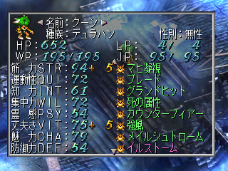
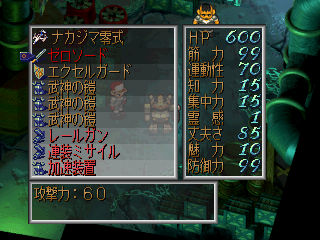

- 초반 진행의 비법
- 최적의 육성 장소
- 요마 최고의 빙의 능력을 사용
- 몬스터 육성 방법
- 전투에 필요한 기술을 습득
- 강력한 몬스터로 변신
- 몬스터 능력을 숨기기
- 메카의 검투 마스터리 장비 세팅법
- 정체의 룬으로 기술을 번뜩인다
초반 진행의 비법
시나리오를 진행하는데 있어서 초반에 필요한 진행 순서와 방식에 대해 설명한다.
사가 프론티어는 쓸데없이 전투를 많이 하면, 보스의 HP가 상승하여 난이도가 높아진다. 따라서 적은 전투 회수로 보다 강한 캐릭터를 육성하는 것이 필요하다.
- 오프닝 이벤트를 끝낸다.
- 동료를 최대한 모은다.
- 제왕의 고분에서 진혼의 곡옥(鎮魂の勾玉)을 입수한다.
- 고대의 쉽에서 듀엘건(デュエルガン)과 강화 장갑(強化装甲)을 입수한다.
- 무한 정크 찾기를 실행하여 고급 아이템을 모은다. (강화 장갑의 공매로 특수 테이블C를 실시)
- 정크샵에서 '듀엘건'과 '강화 장갑'을 매각한다. 5500 크레디트를 벌 수 있다.
- 매각한 크레디트를 기반으로 무한 크레디트 벌이를 실행한다.
- 대량으로 벌은 크레디트로 파티원의 장비를 구입&장비한다.
- 이후 메인 시나리오를 진행한다.
※ 진혼의 곡옥은 고유 기술 성가(聖歌)를 사용할 수 있다. 성가는 강력한 전체 공격을 할 수 있으며, 초반 진행에 있어서 공격의 요점이 된다.
※ 고급 장비품으로 파티원을 강화시키고, 필요 기술을 준비(흡수/번뜩임), HP 500~700 정도까지 육성을 하면, 최종 보스전까지 단숨에 갈 수 있다.
최적의 육성 장소
슈라이크 - 생명과학 연구소
여기는 2랭크 높은 적들이 출현한다. 기본 랭크가 높다면, 9랭크 적들이 고정 심볼로 출현한다. 따라서 이곳은 요마와 몬스터를 육성하기 아주 좋은 장소이다. 게다가 랭크도 높으므로 기술을 번뜩이기 아주 좋은 장소이니 열심히 싸우자. 연구원과 대화를 하면 본래의 심볼을 보여주며 전투에 들어간다. 이 심볼들은 고정이므로 종족을 노려서 빙의나 몬스터를 흡수할 수 있다.
요크랜드 - 늪지
여기도 2랭크 높은 적이 출현한다. 다만, 수서계 심볼 한정이다. 수서계 적을 상대하기 위해 물 내성, 응시 내성 방어구를 준비하는 것이 좋다.
시간요마의 리전
시술의 자질을 진행 중, 갈 수 있는 장소로 여기에 있는 12개의 심볼은 아무리 전투를 해도 에너미 랭크가 상승하지 않는다. (전투 횟수에 변동 없음) 따라서 이것을 이용하면 랭크 상승 없이 안정적으로 적과 전투를 반복하고, 각종 능력을 흡수할 수 있는 수련장이 된다.
요마 최고의 빙의 능력을 사용
요마는 빙의로 능력치를 상승시키는 종족이다. 빙의만 할 수 있다면 초반부터 엄청난 능력치를 가진 상태로 플레이할 수 있게 된다. 그리고 '빙의 능력'(기술) 중에 최고는 검의 '그리피스 스크래치', 팔의 '타이거 램페이지', 다리의 '타이터스 웨이브'가 있다.
만일 9랭크의 적을 쓰러뜨릴 수 있는 수준이라면, 아래의 빙의 대상을 흡수해보자.
| 요마 무구 |
빙의 대상 |
HP |
빙의 능력 |
장소 |
심볼 위치 |
| 요마의 검 |
듀라한(デュラハン) |
7589 |
그리피스 스크래치 |
슈라이크 - 생명과학 연구소 |
출입구 우측 중앙의 연구원 |
| 요마의 다리 |
주작(朱雀) |
6048 |
타이터스 웨이브 |
최심부. 닭장이 있는 방 |
| 요마의 팔 |
크라켄(クラーケン) |
12580 |
타이거 램페이지 |
요크랜드 - 늪지 |
수서계 심볼 |
총합 상승 능력치
| 빙의 대상 |
STR |
QUI |
INT |
WIL |
PSY |
VIT |
CHA |
| 듀라한 |
20 |
20 |
20 |
- |
20 |
- |
- |
| 주작 |
20 |
20 |
20 |
20 |
20 |
20 |
- |
| 크라켄 |
30 |
- |
- |
- |
- |
30 |
- |
| 총합 |
70 |
40 |
40 |
20 |
40 |
50 |
0 |
능력치 총합은 주작 3마리를 빙의한 것 보다는 낮지만, 요마 최강의 기술을 사용할 수 있는 조합이므로 나쁘지 않다.
몬스터 육성 방법
일단 아래의 내용을 읽기 전에
몬스터 종족을 읽고 오자.
몬스터의 육성은 세 가지로 나뉜다.
- 최대 HP 상승 : 지금까지 흡수한 경험이 없던 몬스터 능력을 새롭게 흡수한 경우, 최대 HP가 상승한다.
- 전투에 필요한 기술 습득 : 그랜드 히트, 매지컬 힐 같은 전투에 도움이 되는 기술을 흡수하여 사용할 수 있도록 한다.
- 몬스터 변신 : 강력한 몬스터로 변신하여, 능력치를 높게 만든다.
1번은 몬스터 변신에도 영향이 있는 것으로, HP가 높을수록 강한 몬스터로 변신을 할 수 있다. 따라서 매 전투시 몬스터 동료로 싸워서 흡수를 반복하는 것이 중요하다. 최대한 모든 몬스터의 모든 능력을 흡수하자. 흡수한 능력에 대한 이력은 남아 있지 않고, 흡수 가능한 능력은 랜덤이므로 조절할 수 없다. 단순히 흡수만 반복하다보면 자연스럽게 HP가 높아지니 어려워하지 말자.
2번은 전투에서 쓸모 있는 기술을 보존시켜둬야 전투가 편해진다. 공격용으로 그랜드 히트(グランドヒット)가 초강력 기술이며,
회복용은 매지컬 힐(マジカルヒール), 생명의 비(生命の雨)를 가지고 있다면, 회복역으로도 완벽해진다. 이 3가지 기술은 입수도 쉬운 편이다.
3번은 가장 핵심적인 내용으로 아무리 HP가 높고, 좋은 기술을 가지고 있어도 몬스터의 능력이가 낮으면 허무하게 전투 불능이 될 수 있다. 몬스터 동료는 LP도 낮은 편이라서 능력치가 뛰어나지 않으면 전력으로 사용하기 매우 힘들다.
전투에 필요한 기술을 습득
아래는 추천 기술의 입수 방법에 대해 정리한 표이다. (통상 몬스터, 1/32 확률 제외)
| 기술명 |
랭크 |
종족 |
대상 몬스터명 |
입수 확률 |
| 그랜드 히트 |
4 |
곤충 |
데스포커(デスポーカー) |
1/16 |
| 6 |
거인 |
어스 골렘(アースゴーレム) |
1/1 |
| 5 |
불사 |
나이트 스켈톤(ナイトスケルトン) |
1/4 |
| 5 |
요마(남) |
에인헤리알(エインヘリアル) |
1/4 |
| 7 |
요마(남) |
베그사크(ベクサーク) |
1/4 |
| 매지컬 힐 |
7 |
짐승 |
유니콘(ユニコーン) |
1/4 |
| 7 |
마생명 |
마경(魔鏡) |
1/16 |
| 생명의 비 |
7 |
짐승 |
유니콘(ユニコーン) |
1/32 ※ |
※ 통상 몬스터 중에 유일하게 '생명의 비'를 흡수할 수 있어서 추가함
'그랜드 히트' 흡수에 적합한 몬스터는 '나이트 스켈톤'이다.
제왕의 고분에서 신기 아이템 입수로 '나이트 스켈톤'과 강제 전투가 발생하니까 여기서 흡수하기 아주 쉽다.
'매지컬 힐'과 '생명의 비'의 몬스터는 '유니콘'이다. 다만, 짐승계 랭크 7이라서 랭크를 못 맞추면 게임 진행 중 만나보지도 못 할 수 있다. 다행히 랭크 상한이 고정된 장소가 있는데, 바로
크론 뒷골목의 자연동굴로 가는 길목이다. 자연동굴의 입구에 해당하는 하수도에는 처음 요마(여) 심볼만 있는데, 가까이 접근하면 랭크 7상한의 몬스터를 소환한다. 첫 번째 소환 대상이 바로 짐승계이므로, 현재 랭크가 7 이상일 경우 '유니콘'을 반드시 만날 수 있다.
강력한 몬스터로 변신
몬스터 변신 시스템은 조건이 매우 복잡하기 때문에 간략하게 설명하기 어렵다. 따라서 추천하는 몬스터 변신을 하는 방법만 설명하겠다.
트리케프스
랭크 6 수서계 트리케프스(トリケプス)
전격(電撃)만 흡수하면 변신할 수 있는 몬스터. 변신 방법이 간단하고, 능력치도 좋아서 초중반에 아주 유용한 몬스터 변신이다.
참고로 동료 몬스터 썬더(サンダー)는 처음부터 전격을 가지고 있다. 이후 흡수한 기술에 따라서 금방 '트리케프스'로 변신이 가능하다.
변신의 방법
'전격'을 흡수할 대상은 드래곤 미니(ドラゴンミニー) 고정 몬스터이므로, 적 랭크를 생각할 필요가 없다.
- <매직 킹덤>으로 간다.
- 프루드의 공방을 진행한다.
- 드래곤의 석상이 있는 방에서 요마(여)가 드래곤의 석화를 풀을 때까지 전환한다.
- 석화가 풀린 드래곤 심볼과 접촉하면, '드래곤 미니'와 전투를 할 수 있다.
- 이후는 흡수할 때까지 전투를 반복하는 것으로 입수 가능하다.
와이번
랭크 6 조류계 와이번(ワイバーン)
능력치도 적당히 높고, 변신 조건이 다양해서 초반이라도 변신할 수 있는 방법이 있다.
대표적인 변신 방법은 HP 300 이상일 때, 독침(毒針)을 흡수하는 것이다. 곤충계 랭크 4의 데스포커(デスポーカー)에게서 '독침'을 흡수할 수 있다. 초반에 랭크 조절이 힘든 경우, <슈라이크>의 '생명과학 연구소'의 조류계 심볼을 이용하는 것이 가장 편하다. 또는, 강풍(强風)을 흡수할 때 변신이 가능하다.
슈리카
랭크 8 식물계 슈리카(シュリーカー)
능력 밸런스가 좋고, 내성과 방어력이 뛰어난 몬스터다. HP 400 정도의 상태에서, 스크림(スクリーム)을 흡수하면 변신할 수 있다. '스크림'은 랭크 4의 요마(여) 반시(バンシー)에게서 흡수할 수 있다.
스핑크스
랭크 8 조류계 스핑크스(スフィンクス)
특수 변신 조건을 가진 몬스터로, HP나 다른 몬스터 능력의 조건이 필요없이 스핑크스 리들(スフィンクスリドル)이라는 기술을 가지고 있으면, 간단하게 변신할 수 있다.
'스핑크스 리들'은 성공율이 높은 즉사 기술로 전투에 매우 도움이 된다. 문제는 이 기술을 초반에 흡수할 수 있는 방법이 한정되어 있다는 것. 주인공에 따라 좌우되므로, 초반에는 어려울 수 있다. 그리고 이 기술은 '스핑크스'에게만 흡수할 수 있다.
레드편에서는 초반의 이벤트로 '스핑크스'와 싸우게 된다. 따라서 몬스터 동료로 흡수만 시킨다면 입수에는 문제가 없다. 그 외의 주인공은 초반에 흡수하려면 <시간요마의 리전>에서 싸우는 방법 밖에 없다. (이 방법도 T260G편, 쿤편에서는 불가능) 그냥 레드편 한정으로 초반에 할 수 있는 몬스터 변신이라 생각하자.
실질적인 전투 능력은 '트리케프스'와 큰 차이가 없다. 변신 후 안정적으로 유지할 수 있다는 것만 장점이라고 할 수 있겠다.
듀라한

랭크 9 불사계 듀라한(デュラハン)
궁극의 몬스터 변신이라고 할 수 있다. 몬스터 변신의 최종 목표! 능력도 최강, 내성도 최강! 여기에 강력한 기술만 배치한다면, 전투 배치 1순위로 사용할 수 있게 된다.
듀라한 변신은 몇 가지 방법이 있는데, 원하는 기술을 배치하여 듀라한으로 변신하기 위해서는
몬스터 능력을 숨기기가 필요하다.
기본 조건은 최대 HP 500 이상이 필요하다. 그리고 아래의 부위별 기술을 1개씩 갖고 있어야 한다.
| 부위 |
기술명(K) |
기술명(J) |
흡수할 수 있는 적 |
| 머리 |
최면 |
催眠 |
몽키 라이더 (짐승계 랭크1)
고스트 (불사계 랭크2) |
| 매료 응시 |
魅了凝視 |
언노운 (무기질계 랭크5)
미믹 (마생명계 랭크8)
듀라한 (불사계 랭크9) |
| 마비 응시 |
マヒ凝視 |
나이트 쉐이드 (식물계 랭크5)
사이클롭스 (거인계 랭크7)
언노운 (무기질계 랭크5) |
| 석화 응시 |
石化凝視 |
바질리스크 (수서계 랭크8) |
| 팔 |
블레이드 |
ブレード |
제니스 맨티스 (곤충계 랭크7)
하피 (조류계 랭크4)
거인 (거인계 랭크9)
리키드 메탈 (무기질계 랭크6) |
| 아이스 스매시 |
アイススマッシュ |
퓨즈 크리스탈 (무기질계 랭크4)
리키드 메탈 (무기질계 랭크6)
눈의 정령 (무기질계 랭크9) |
| 히트 스매시 |
ヒートスマッシュ |
거인 (거인계 랭크9)
리키드 메탈 (무기질계 랭크6) |
| 몸통 |
죽음의 속성 |
死の属性 |
불사계 몬스터 랭크 1~8 |
상기 부위별 3개의 기술을 배치하고, '능력 숨기기'를 통하여 변신을 유지한 상태로 같은 부위의 기술을 추가해줄 수 있다.
몬스터 능력을 숨기기
일부 몬스터 변신은 특정 기술만 가지고 있어도 해당 몬스터로 변신해버리는 경우가 있다.(특수 변신) 이때는 몬스터 변신을 조절할 수 없어지는데 아래의 방법을 사용하면 해당 기술을 보존하면서, 다른 몬스터로 변신을 가능하게 할 수 있다. 이것을
능력 숨기기라고 부르겠다.
주작(朱雀)의 특수 변신의 조건은 파이어 배리어(ファイアーバリア)를 흡수하는 것이다. 이것을 가지고 있으면 다른 몬스터로 변신이 거의 불가능하다. 대신 '파이어 배리어'를 보존하면서, 다른 몬스터로 변신을 할 수 있는 방법이 있는데, 같은 부위에 해당하는 기술로 <장비기술>에서 편성을 바꿔주는 것이다. 아래의 예를 보자.
| 부위 |
기술명 |
| 몸통 |
프리즈 배리어 |
| 몸통 |
파이어 배리어 |
| 마법 |
자기 폭풍 |
| 마법 |
생명의 비 |
표의
녹색 부분은 특수 변신의 조건이 되는 기술이다.('생명의 비'는 '유니콘'의 특수 변신)
'능력 숨기기'를 실행할 기술과 동일한 부위의 기술을 바로 위에 배치하는 것으로 아래에 있는 기술을 숨길 수 있다. 이유는
몬스터 능력의 우선 순위는 같은 부위의 기술 중, 가장 위에 있는 것을 기준으로 하기 때문이다. 따라서 같은 부위 아래에 배치한 기술은 변신 판정에 포함되지 않으므로 변신을 제어할 수 있다.
우선 순위는 <장비기술> 화면의 배치 순서가 아니라, 각 부위별 배치 순서를 말하는 것이다.
'능력 숨기기'로 복수의 같은 부위의 기술을 숨길 수 있다. (가장 위에 있는 것으로 변신 판정을 하기 때문에)
또한, 변신에 전혀 영향을 주지 않는 몬스터 기술들이 있는데 이 기술로 '능력 숨기기'를 실행하면 매우 편하다. 자세한 내용은 아래의 표를 참고하자.
| 기술명(K) |
기술명(J) |
흡수할 수 있는 적 |
| 머리 |
| 죽음의 응시 |
死の凝視 |
언노운 (무기질 랭크 5)
듀라한 (불사 랭크 9) |
| 팔 |
| 고양이 속이기 |
ねこだまし |
로키 (짐승 랭크 1) |
| 데스 터치 |
デスタッチ |
리치 (불사 랭크 7) |
| 파랄리시스 터치 |
パラリシスタッチ |
퓨즈 크리스탈 (무기질 랭크 4) |
| 다리 |
| 꼬리 |
しっぽ |
원더 도기 (요마/남 랭크 1) |
| 미격 |
尾撃 |
라미아 (요마/여 랭크 8) |
| 몸통 |
| 털고르기 |
毛繕い |
원더 도기 (요마/남 랭크 1) |
| 화염의 입맞춤 |
炎のくちづけ |
서큐버스 (요마/여 랭크 7) |
| 브레스 |
| 수격 |
水撃 |
건피쉬 (수서 랭크 2) |
| 냉기 |
冷気 |
눈의 정령 (무기질 랭크 9) |
| 마법 능력 |
| 엘프 쇼트 |
エルフショット |
스프라이트 (요마/여 랭크 1) |
| 매지컬 힐 |
マジカルヒール |
스프라이트 (요마/여 랭크 1)
온디누 (요마/여 랭크 2)
유니콘 (짐승 랭크 7) |
| 암석 |
岩石 |
솔저빌 (수서 랭크 3)
사이버 사커 (요마/남 랭크 8) |
| 실피드 |
シルフィード |
발키리 [창] (요마/여 랭크 6) |
메카의 검투 마스터리 장비 세팅법
메카 종족은 아이템을 자유롭게 장비할 수 있는 것이 특징이다. 다른 종족과 다르게 아이템 장착 시, 메카 고유의 능력치 보너스가 붙는다. 따라서 어떤 아이템에 어떤 능력치 보너스가 붙는지 알 수 있다면, 목적에 맞는 장비를 세팅할 수가 있다.
'보디 타입'에 따라서 고유 무장을 갖춘 메카가 있다. 통상 3개의 고유 장비를 가지고 있기 때문에 타입을 변경할 수 있는 T260G를 제외한 나머지 메카는 장비칸이 약간 부족하다.(5칸 사용 가능) 대신, 기본 능력은 높은 편이다.
메카의 운용법은 2가지로 나뉜다. <검투 마스터리+다단 베기>로 적 단체에 특대 데미지를 줄 수 있는 타입과 <사격 마스터리+전체 공격 기술+고유 기술을 사용할 수 있는 아이템을 장비>의 전체 공격에 특화한 타입이다. 최종적으로는 공격력이 매우 뛰어난 '검투 마스터리'를 사용한 타입의 육성을 하게 된다.
메카의 '보디 타입'과 전투 스타일에 맞춘 장비 세팅을 할 수 있다면, 초반부터 강력한 캐릭터로 만들 수 있다. 여기서는 상점제 아이템을 이용한 방법으로 설명하며, 아이템 구입 자금은
무한 크레디트 벌이로 모으자.
검투 마스터리 타입의 세팅에는 프로그램 '검투 마스터리'와 '다단베기'가 필요하다. 이 2개의 프로그램이 있으면, 다른 프로그램은 아마 필요 없을 것이다. 각 프로그램의 효과는
메카 기술 항목을 참조하자.
<검투+다단>을 개발할 수 있는 보디 타입(1, 3, 6)의 메카 캐릭터는 <T260, 나카지마 영식, 특수 공작차, 레오날드>가 있다. 그리고 T260G편의 T260G는 타입 7과 8에서도 개발이 가능하다.
장비는 공격력이 높은 검/도를 장비하고, <STR/QUI/VIT/DEF>를 최대한 높이는 세팅을 추천한다. 이 능력치 중에서 VIT를 가장 신경써야 하는데, 메카의 DEF는 방어구로 쉽게 올릴 수 있지만, VIT는 특정 장비만 보너스를 가지고 있어서 신경쓰지 않으면 거의 초기값으로 남아있는다.
보스급 적은 DEF 무시 공격을 하는 경우가 있어서 DEF만 믿다가는 빈사 상태가 될 수도 있다. VIT는 방어력 무시 공격에 포함되지 않기 때문에 VIT가 높다면, 안정적인 방어력을 얻을 수 있다. 다른 종족도 동일하니 VIT가 중요하다는 것을 명심하자. VIT와 DEF가 99이면, 거의 모든 데미지를 극격감시킬 수 있다.
VIT 크게 올릴 수 있는 장비는 몸통 방어구와 방패가 있다.
- 추천 몸통 방어구는 무신의 갑옷(武神の鎧)이다. HP +100, DEF +32, VIT +20, STR +20의 성능을 가지고 있고, <넬슨>에서 2300 크레디트로 구입할 수 있다.
- 방패는 엑셀 가드(エクセルガード)를 장비하자. <참격/타격/돌격>을 회피할 수 있으며, HP +100, VIT +20, STR +20의 성능을 가지고, 무한 정크 찾기의 방법으로 대량의 엑셀 가드를 입수할 수 있다. 거의 공짜로!
'보디 타입'은 7개의 아이템을 장비할 수 있는 타입1과 기본 QUI가 높은 타입3을 추천한다. 참고로 두 타입 모두 '검투 마스터리'와 '다단베기'를
개발하여, 사용할 수 있다.
타입3의 나카지마 영식 또는 T260G에 아래와 같이 5개의 장비칸에 장비를 한다.
| 장비 슬롯 |
아이템명 |
HP |
STR |
QUI |
INT |
WIL |
PSY |
VIT |
CHA |
| 1 |
제로 소드 |
100 |
20 |
20 |
- |
- |
- |
- |
- |
| 2 |
엑셀 가드 |
100 |
20 |
- |
- |
- |
- |
20 |
- |
| 3 |
무신의 갑옷 |
100 |
20 |
- |
- |
- |
- |
20 |
- |
| 4 |
무신의 갑옷 |
100 |
20 |
- |
- |
- |
- |
20 |
- |
| 5 |
무신의 갑옷 |
100 |
20 |
- |
- |
- |
- |
20 |
- |

상기 세팅을 하면 <HP 600, STR 99, QUI 70, VIT 85, DEF 99>의 능력치를 만들 수 있다.
타입1도 같은 방식으로 세팅하면 2개의 슬롯이 남는 상태에서 QUI만 25이고, 나머진 동일하게 만들 수 있다. 다른 동료의 QUI가 낮은 편이며, 연계에 신경쓰지 않는다면, 타입1에서 남은 2개의 칸에 <물 내성/음파 내성/부유> 효과의 액세서리와 백팩을 달아주면, 공격/방어/회복에 빈틈이 없어진다.
최대 WP가 모자르다면, '에너지 보급' 프로그램을 개발 가능한 타입6이 좋다. 추가로 타입6의 수리장치(修理装置)를 사용할 수 있어서 메카의 HP 회복에 많은 도움이 된다. 이때 동일 장비를 세팅하면, 타입6의 VIT는 95가 된다.
세팅 완료 후, 전투에서 '다단베기'를 사용해주면, 그 위력을 실감할 수 있다. 최대 12회 연속 베기!
그리고 메카 동료의 QUI를 거의 비슷하게 맞춰주면, 최대 4연계 '다단베기'를 쓸 수 있다. (T260G편 한정)
정체의 룬으로 기술을 번뜩인다
인술 정체의 룬(停滞のルーン)을 이용하여, 기술을 아주 쉽게 번뜩일 수 있다.
'정체의 룬'의 효과는 "적과 술법자를 수턴간 경화시킨다."라는 효과가 있다. 그리고 이 술법에 걸린 상태는
무적 상태가 된다. 이것을 이용해서 효과가 지속되는 동안에 동료 캐릭터의 번뜩일 기술이나 체술을 사용하게 한다. 데미지는 줄 수 없지만, 기술은 통상 전투와 동일하게 번뜩일 수 있다. 추가로 시술 오버 드라이브(オーヴァドライブ)를 사용하면, 1턴에 8회 공격이 가능해지므로 기술을 번뜩일 확률이 높아진다. 많은 기술을 번뜩이기 위해서 <장비기술>란은 많이 비워두자.
확실하게 번뜩이기 위해서 '번뜩임 레벨'이 높은 적과 싸우는 것을 추천한다. 장소는 <슈라이크>의 '생명과학 연구소'가 적격